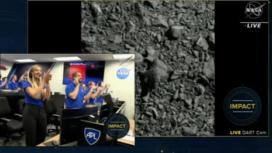

If a giant asteroid smashes into the moon in 2032 it could send lunar debris hurtling towards Earth, researchers have said, posing a risk to satellites but also creating a rare and spectacularly vivid meteor shower visible in the skies.
Asteroid 2024 YR4 triggered a planetary defence response earlier this year after telescope observations revealed the “city killer” had a 3% chance of colliding with Earth.
Later observations found the likelihood of the asteroid, estimated at about 53-67 metres (174-220ft) wide, hitting the Earth was negligibly low at 0.0017% – although the moon would still be under threat.
The odds of the space rock hitting Earth’s nearest neighbour have since risen to 4.3%, according to data from the James Webb space telescope.
A study released this month by researchers from Canadian universities, which has not been peer reviewed, has mapped out how the asteroid’s impact on the moon may shear off rocks that could head for Earth.
Researchers simulated how the impact could create a roughly 1km-diameter crater in the moon’s surface and launch millions of kilograms of debris out of the moon’s orbit and towards Earth, where it would arrive days later.
Possible impact of asteroid 2024 YR4 on the moon in December 2032
“If 2024 YR4 strikes the moon in 2032, it will (statistically speaking) be the largest impact in approximately 5,000 years,” the report said. “The resulting meteor shower at Earth could be eye-catching.”
While many of the millimetre- to centimetre-sized lunar rocks would burn up in Earth’s atmosphere and present no threat to humans, some material could be captured in Earth’s orbit, presenting a hazard to satellites, spacecraft and astronauts.
The study’s lead author, Dr Paul Wiegert of the University of Western Ontario, told Agence France-Presse that the impact on the moon’s surface would be “comparable to a large nuclear explosion in terms of the amount of energy released”.
“A centimetre-sized rock travelling at tens of thousands of metres per second is a lot like a bullet,” he added.
The findings showed that “planetary defence considerations” should be extended to cover threats to areas far away from near-Earth space, the study said.
Nasa and other national space agencies have long tracked asteroids and comets that could threaten the planet – and are working on ways to deal with a possible collision – but the moon is of secondary concern.
Joy and jubilation as Nasa crashes spacecraft into an asteroid in 'planetary defence test' – video
In 2022, Nasa conducted a test to divert an asteroid when it smashed its Double Asteroid Redirection Test (Dart) spacecraft into one named Dimorphos , successfully altering its orbit trajectory. The mission was seen as a test run for future celestial bodies that may be on a course for Earth.
Asteroid 2024 YR4, which orbits the sun, is now too far away to be properly observed and is not expected to be visible again until 2028, when researchers can reassess its size and trajectory.
Despite earlier concerns that an impact with the moon might alter its orbit around Earth, Nasa ruled out that scenario in April when it reassessed its size.
Agence France-Presse contributed to this report